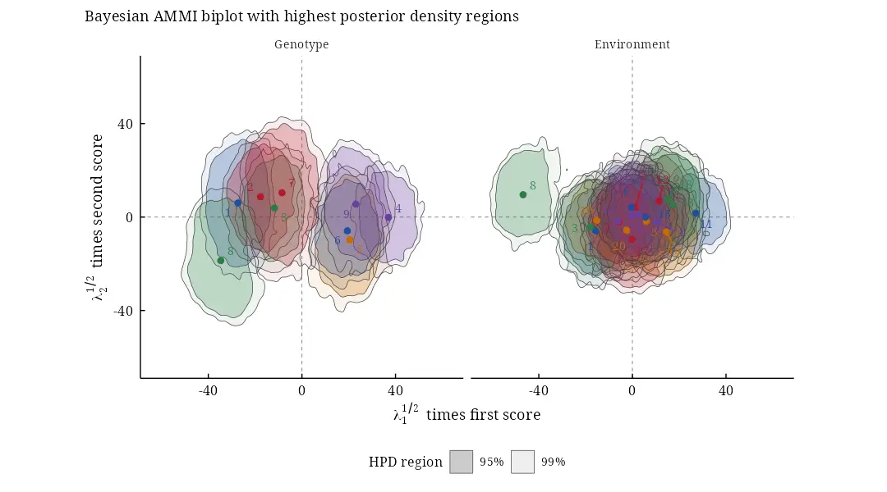
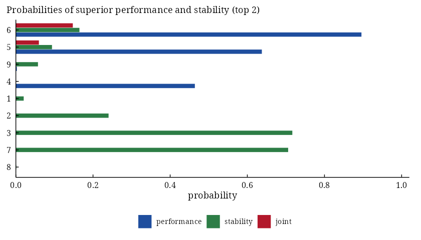
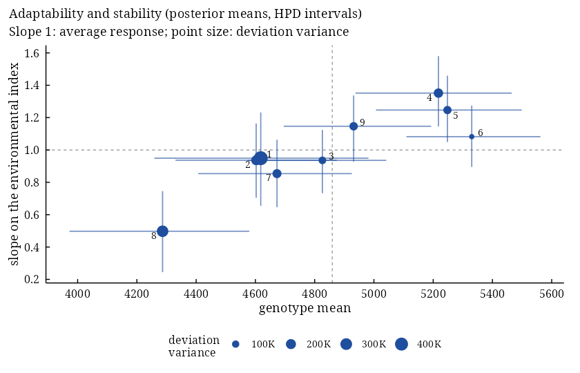

Overview
bayesammi estimates the additive main effects and multiplicative interaction (AMMI) model of multi-environment trials by the Gibbs sampler of Crossa et al. (2011). Every parameter has a posterior distribution, so the AMMI biplot gets statistical inference: highest posterior density (HPD) regions show which genotypes and environments interact significantly and which form homogeneous groups.
-
bayes_ammi(): the Gibbs sampler (overall mean, genotype and environment effects, singular values, scores on the constrained spheres, error variance), with several chains, burn-in, thinning, priors frombam_priors(), posterior summaries with HPD intervals and the convergence diagnostics of Raftery-Lewis, Heidelberger-Welch and Gelman-Rubin; -
biplots(): the biplot with HPD regions of the genotype and environment coordinates; -
ge_ammi(),ge_mean(),ge_eff()and friends: least-squares AMMI and the tables it is built on; -
bam_interpret(): a plain-language interpretation of every result, computed from its numbers.
Beyond the article:
- unbalanced trials (missing plots and empty cells, by data augmentation) and environment-specific error variances (
.het = TRUE); - the Bayesian GGE (sites regression) model (
.model = "GGE") andbam_winners(), the probability that each genotype wins in each environment; - decisions for breeders:
bam_superiority()(probabilities of superior performance and stability of Dias et al. 2022),bam_ranks(),bam_stability()(Bayesian AMMI stability value and interaction variance) andbam_predict()(every cell, observed or not); - Bayesian stability analysis:
bayes_stability()fits the Finlay-Wilkinson, Eberhart-Russell and Shukla models by Gibbs sampling (slopes, deviation and stability variances, Eskridge’s safety-first index, all with HPD intervals);bam_indices()andbam_ammi_indices()give the posterior distributions of Wricke’s, Shukla’s, Lin and Binns’, Annicchiarico’s and Eskridge’s indices and of ASV, SIPC, EV, Za, WAAS and WAASY; - model choice: DIC and WAIC with
bam_compare(), posterior predictive checks withbam_ppc(), and the draws for posterior, bayesplot and coda; -
bam_app(): an application that runs every analysis without code, with results that copy cleanly.
Version 1.0.0 rewrites the sampler of version 0.3.0, which, among other faults, never updated the singular values and did not return the error variance (see NEWS). The new sampler runs in C++ and reproduces Tables 1 and B1 of Crossa et al. (2011). Every function keeps its name, arguments and result components; fifteen vignettes come in HTML and PDF. Every printed result ends with the sources of its method; bam_cite() gives them as BibTeX.
Installation
install.packages("bayesammi")
# development version
# install.packages("remotes")
remotes::install_github("myaseen208/bayesammi")Quick start
library(bayesammi)
data(Maiz)
fit <-
bayes_ammi(
.data = Maiz
, .y = y
, .gen = entry
, .env = site
, .rep = rep
, .nIter = 3000
, .k = 2
, .burnin = 500
, .thin = 1
, .chains = 2
, .priors = bam_priors(
mu_mean = 0
, mu_var = 1e+8
, tau_mean = 0
, tau_var = 1e+8
, delta_mean = 0
, delta_var = 1e+8
, lambda_mean = 0
, lambda_var = 1e+8
, nu = 1
, s2 = NULL
)
, .level = 0.95
, .seed = 1
, .align = TRUE
, .model = "AMMI"
, .het = FALSE
, .waic = TRUE
)
fit$summary[block %in% c("mu", "sigma2", "lambda")] parameter block label axis mean sd mc_se lower
1: mu mu NA 4858.071 31.8860 0.4116465 4795.71823
2: sigma2 sigma2 NA 762170.002 43547.0839 737.6230979 680191.01282
3: lambda[1] lambda 1 5459.383 462.2078 6.5519088 4526.53731
4: lambda[2] lambda 2 1695.053 770.6989 30.0725905 59.23157
upper ess rhat
1: 4920.000 6000.0000 1.0000264
2: 849256.062 3485.3720 1.0004346
3: 6305.934 4976.6695 1.0006729
4: 2891.761 656.7918 0.9999747
bp <-
biplots(
model = fit
, burnin = 0
, thin = 0.5
, pb = c(0.05, 0.01)
, plot_stable = TRUE
, plot_unstable = TRUE
, ncolors = 5
, .which = "both"
, .grid = 100
)
bp$biplot
Which genotypes are likely to be among the best two, and stable?
sp <-
bam_superiority(
fit = fit
, .s = 0.2
, higher_better = TRUE
)
sp$marginal Gen mean prob_performance prob_stability prob_joint
1: 6 5331.377 0.8958333 0.16483333 0.1476631944
2: 5 5247.055 0.6376667 0.09366667 0.0597281111
3: 9 4927.836 0.0025000 0.05733333 0.0001433333
4: 4 5217.619 0.4640000 0.00000000 0.0000000000
5: 1 4615.315 0.0000000 0.02033333 0.0000000000
6: 2 4604.674 0.0000000 0.24033333 0.0000000000
7: 3 4824.549 0.0000000 0.71666667 0.0000000000
8: 7 4670.736 0.0000000 0.70583333 0.0000000000
9: 8 4283.482 0.0000000 0.00100000 0.0000000000
plot(x = sp, which = "marginal")
Adaptability and stability by the Bayesian Eberhart-Russell model:
fs <-
bayes_stability(
.data = Maiz
, .y = y
, .gen = entry
, .env = site
, .rep = rep
, .model = "ER"
, .nIter = 3000
, .burnin = 500
, .thin = 1
, .chains = 2
, .priors = bam_stab_priors(
mu_var = NULL
, g_var = NULL
, h_var = NULL
, b_var = 100
, nu = 1
, s2 = NULL
, nu_d = 1
, s2_d = NULL
)
, .level = 0.95
, .alpha = 0.05
, .seed = 1
, .waic = TRUE
)
plot(x = fs, which = "slopes")
The same analyses without code:
bam_app(
launch.browser = TRUE
)Learn more
- Vignettes:
browseVignettes("bayesammi"), starting withbayesammi_01_getting_started; PDF versions on the site. - Site: https://myaseen208.com/bayesammi/
- Notation:
bam_notation() - References of the methods behind a result:
bam_cite()
Citation
Yaseen M, Crossa J, Perez-Elizalde S, Jarquin D, Cotes JM, Viele K, Liu
G, Cornelius PL, Abadillo Velasco JG (2026). _bayesammi: Bayesian
Estimation of the Additive Main Effects and Multiplicative Interaction
Model_. R package version 1.0.0 (first released 2018),
<https://CRAN.R-project.org/package=bayesammi>.BibTeX:
@Manual{bayesammi,
title = {{bayesammi}: Bayesian Estimation of the Additive Main Effects and Multiplicative Interaction Model},
author = {Muhammad Yaseen and Jose Crossa and Sergio Perez-Elizalde and Diego Jarquin and Jose Miguel Cotes and Kert Viele and Genzhou Liu and Paul L. Cornelius and Julian Garcia {Abadillo Velasco}},
year = {2026},
note = {R package version 1.0.0 (first released 2018)},
url = {https://CRAN.R-project.org/package=bayesammi},
}Please also cite the methods you use: citation("bayesammi") lists them with the package, and bam_cite(x) gives the references of a single result.